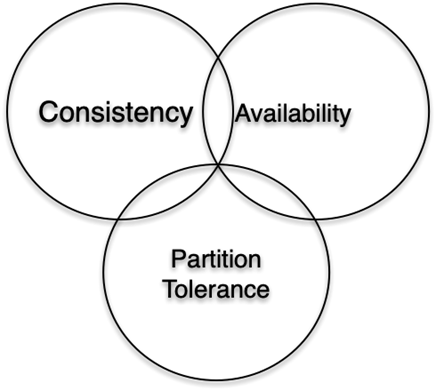
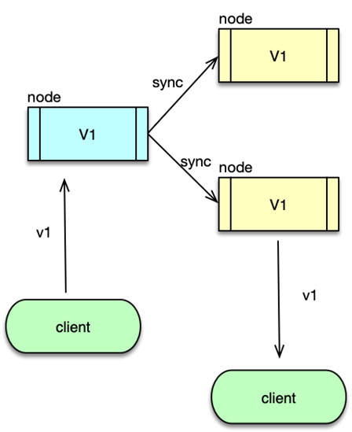
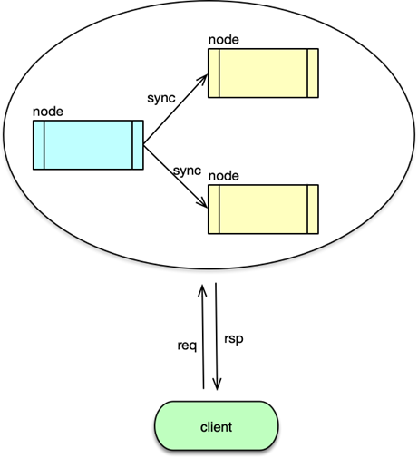
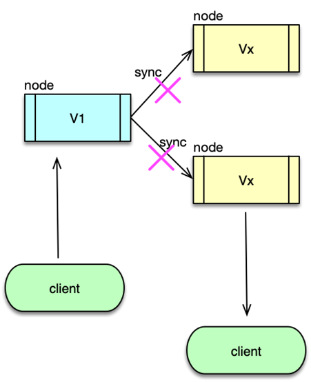
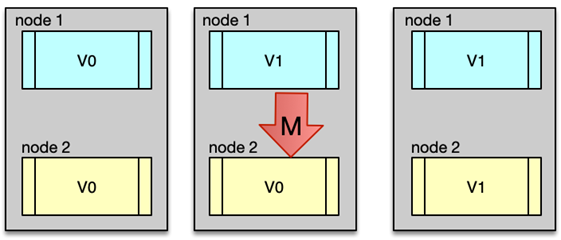
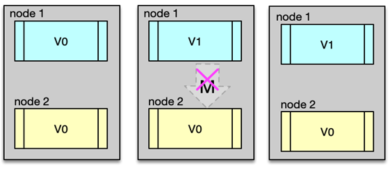
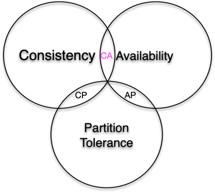
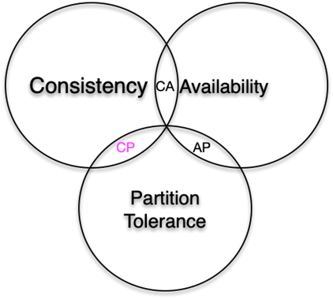
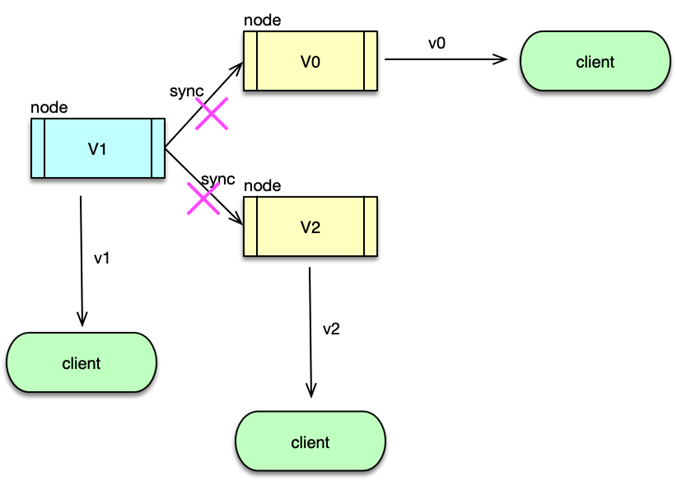
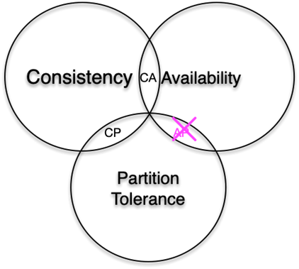

- 00 开篇寄语：缓存，你真的用对了吗？.md.html
- 01 业务数据访问性能太低怎么办？.md.html
- 02 如何根据业务来选择缓存模式和组件？.md.html
- 03 设计缓存架构时需要考量哪些因素？.md.html
- 04 缓存失效、穿透和雪崩问题怎么处理？.md.html
- 05 缓存数据不一致和并发竞争怎么处理？.md.html
- 06 Hot Key和Big Key引发的问题怎么应对？.md.html
- 07 MC为何是应用最广泛的缓存组件？.md.html
- 08 MC系统架构是如何布局的？.md.html
- 09 MC是如何使用多线程和状态机来处理请求命令的？.md.html
- 10 MC是怎么定位key的.md.html
- 11 MC如何淘汰冷key和失效key.md.html
- 12 为何MC能长期维持高性能读写？.md.html
- 13 如何完整学习MC协议及优化client访问？.md.html
- 14 大数据时代，MC如何应对新的常见问题？.md.html
- 15 如何深入理解、应用及扩展 Twemproxy？.md.html
- 16 常用的缓存组件Redis是如何运行的？.md.html
- 17 如何理解、选择并使用Redis的核心数据类型？.md.html
- 18 Redis协议的请求和响应有哪些“套路”可循？.md.html
- 19 Redis系统架构中各个处理模块是干什么的？.md.html
- 20 Redis如何处理文件事件和时间事件？.md.html
- 21 Redis读取请求数据后，如何进行协议解析和处理.md.html
- 22 怎么认识和应用Redis内部数据结构？.md.html
- 23 Redis是如何淘汰key的？.md.html
- 24 Redis崩溃后，如何进行数据恢复的？.md.html
- 25 Redis是如何处理容易超时的系统调用的？.md.html
- 26 如何大幅成倍提升Redis处理性能？.md.html
- 27 Redis是如何进行主从复制的？.md.html
- 28 如何构建一个高性能、易扩展的Redis集群？.md.html
- 29 从容应对亿级QPS访问，Redis还缺少什么？.md.html
- 30 面对海量数据，为什么无法设计出完美的分布式缓存体系？.md.html
- 31 如何设计足够可靠的分布式缓存体系，以满足大中型移动互联网系统的需要？.md.html
- 32 一个典型的分布式缓存系统是什么样的？.md.html
- 33 如何为秒杀系统设计缓存体系？.md.html
- 34 如何为海量计数场景设计缓存体系？.md.html
- 35 如何为社交feed场景设计缓存体系？.md.html
30 面对海量数据，为什么无法设计出完美的分布式缓存体系？
随着互联网的发展，分布式系统变得越来越重要，当前的大中型互联网系统几乎都向着分布式方向发展。分布式系统简单说就是一个软硬件分布在不同机房、不同区域的网络计算机上，彼此之间仅仅通过消息传递进行通信及协调的系统。分布式系统需要利用分布的服务，在确保数据一致的基础上，对外提供稳定的服务。
CAP 定理的诞生
在分布式系统的发展中，影响最大最广泛的莫过于 CAP 理论了，可以说 CAP 理论是分布式系统发展的理论基石。早在 1998 年，加州大学的计算机科学家 Eric Brewer ，就提出分布式系统的三个指标。在此基础上，2 年后，Eric Brewer 进一步提出了 CAP 猜想。又过了 2 年，到了 2002 年，麻省理工学院的 Seth Gilbert 和 Nancy Lynch 从理论上证明了 CAP 猜想。CAP 猜想成为了 CAP 定理，也称为布鲁尔定理。从此，CAP 定理成为分布式系统发展的理论基石，广泛而深远的影响着分布式系统的发展。
CAP 定理指标

CAP 定理，简单的说就是分布式系统不可能同时满足 Consistency 一致性、Availability 可用性、Partition Tolerance 分区容错性三个要素。因为 Consistency、Availability 、Partition Tolerance 这三个单词的首字母分别是 C、A、P，所以这个结论被称为 CAP 定理。
Consistency 一致性

CAP 定理的第一个要素是 Consistency 一致性。一致性的英文含义是指“all nodes see the same data at the same time”。即所有节点在任意时间，被访问返回的数据完全一致。CAP 作者 Brewer 的另外一种解释是在写操作之后的读指令，必须得到的是写操作写入的值，或者写操作之后新更新的值。从服务端的视角来看，就是在 Client 写入一个更新后，Server 端如何同步这个新值到整个系统，从而保证整个系统的这个数据都相同。而从客户端的视角来看，则是并发访问时，在变更数据后，如何获取到最新值。
Availability 可用性

CAP 定理的第二个要素是 Availability 可用性。可用性的英文含义是指“Reads and writes always succeed”。即服务集群总能够对用户的请求给予响应。Brewer 的另外一个种解释是对于一个没有宕机或异常的节点，总能响应用户的请求。也就是说当用户访问一个正常工作的节点时，系统保证该节点必须给用户一个响应，可以是正确的响应，也可以是一个老的甚至错误的响应，但是不能没有响应。从服务端的视角来看，就是服务节点总能响应用户请求，不会吞噬、阻塞请求。而从客户端视角来看，发出的请求总有响应，不会出现整个服务集群无法连接、超时、无响应的情况。
Partition Tolerance 分区容错性

第三个要素是 Partition Tolerance 分区容错性。分区容错的英文含义是指“The system continues to operate despite arbitrary message loss or failure of part of the system”。即出现分区故障或分区间通信异常时，系统仍然要对外提供服务。在分布式环境，每个服务节点都不是可靠的，不同服务节点之间的通信有可能出现问题。当某些节点出现异常，或者某些节点与其他节点之间的通信出现异常时，整个系统就产生了分区问题。从服务端的视角来看，出现节点故障、网络异常时，服务集群仍然能对外提供稳定服务，就是具有较好的分区容错性。从客户端视角来看，就是服务端的各种故障对自己透明。
正常服务场景

根据CAP定理，在分布式系统中这三个要素不可能三者兼顾，最多只能同时满足两点。接下来，我们用 最简单的2 个服务节点场景，简要证明一下 CAP 定理。
如图所示，网络上有 2 个服务节点 Node1 和 Node2，它们之间通过网络连通组成一个分布式系统。在正常工作的业务场景，Node1 和 Node2 始终正常运行，且网络一直良好连通。
假设某初始时刻，两个节点中的数据相同，都是 V0，用户访问 Nodel 和 Node2 都会立即得到 V0 的响应。当用户向 Node1 更新数据，将 V0 修改为 V1时，分布式系统会构建一个数据同步操作 M，将 V1 同步给 Node2，由于 Node1 和 Node2 都正常工作，且相互之间通信良好，Node2 中的 V0 也会被修改为 V1。此时，用户分别请求 Node1 和 Node2，得到的都是 V1，数据保持一致性，且总可以都得到响应。
网络异常场景

作为一个分布式系统，总是有多个分布的、需要网络连接的节点，节点越多、网络连接越复杂，节点故障、网络异常的情况出现的概率就会越大。要完全满足 CAP 三个元素。就意味着，如果节点之间出现了网络异常时，需要支持网络异常，即支持分区容错性，同时分布式系统还需要满足一致性和可用性。我们接下来看是否可行。
现在继续假设，初始时刻，Node1 和 Node2 的数据都是 V0，然后此时 Node1 和 Node2 之间的网络断开。用户向 Node1 发起变更请求，将 V0 变更为 V1，分布式系统准备发起同步操作 M，但由于 Node1 和 Node2 之间网络断开，同步操作 M 无法及时同步到 Node2，所以 Node2 中的数据仍然是 V0。
此时，有用户向 Node2 发起请求，由于 Node2 与 Node1 断开连接，数据没有同步，Node2 无法立即向用户返回正确的结果 V1。那怎么办呢？有两种方案。
- 第一种方案，是牺牲一致性，Node2 向请求用户返回老数据 V0 的响应。
- 第二种方案，是牺牲可用性，Node2 持续阻塞请求，直到 Node1 和 Node2 之间的网络连接恢复，并且数据更新操作 M 在 Node2 上执行完毕，Node2 再给用户返回正确的 V1 操作。
至此，简要证明过程完毕。整个分析过程也就说明了，分布式系统满足分区容错性时，就无法同时满足一致性和可用性，只能二选一，也就进一步证明了分布式系统无法同时满足一致性、可用性、分区容错性这三个要素。
CAP 权衡
CA

根据 CAP 理论和前面的分析，我们知道分布式系统无法同时满足一致性、可用性、分区容错性三个要素，那我们在构建分布式系统时，应该如何选择呢？
由于这三个要素对分布式系统都非常重要，既然三个不能同时满足，那就先尽量满足两个，只舍弃其中的一个元素。
第一种方案选择是 CA，即不支持分区容错，只支持一致性和可用性。不支持分区容错性，也就意味着不允许分区异常，设备、网络永远处于理想的可用状态，从而让整个分布式系统满足一致性和可用性。
但由于分布式系统是由众多节点通过网络通信连接构建的，设备故障、网络异常是客观存在的，而且分布的节点越多，范围越广，出现故障和异常的概率也越大，因此，对于分布式系统而言，分区容错 P 是无法避免的，如果避免了 P，只能把分布式系统回退到单机单实例系统。
CP

第二种方案选择是 CP，因为分区容错 P 客观存在，即相当于放弃系统的可用性，换取一致性。那么系统在遇到分区异常时，会持续阻塞整个服务，直到分区问题解决，才恢复对外服务，这样可以保证数据的一致性。选择 CP 的业务场景比较多，特别是对数据一致性特别敏感的业务最为普遍。比如在支付交易领域，Hbase 等分布式数据库领域，都要优先保证数据的一致性，在出现网络异常时，系统就会暂停服务处理。分布式系统中，用来分发及订阅元数据的 Zookeeper，也是选择优先保证 CP 的。因为数据的一致性是这些系统的基本要求，否则，银行系统0 余额大量取现，数据库系统访问，随机返回新老数据都会引发一系列的严重问题。
AP

第三种方案选择是 AP，由于分区容错 P 客观存在，即相当于放弃系统数据的一致性，换取可用性。这样，在系统遇到分区异常时，节点之间无法通信，数据处于不一致的状态，为了保证可用性，服务节点在收到用户请求后立即响应，那只能返回各自新老不同的数据。这种舍弃一致性，而保证系统在分区异常下的可用性，在互联网系统中非常常见。比如微博多地部署，如果不同区域的网络中断，区域内的用户仍然发微博、相互评论和点赞，但暂时无法看到其他区域用户发布的新微博和互动状态。对于微信朋友圈也是类似。还有如 12306 的火车购票系统，在节假日高峰期抢票时，偶尔也会遇到，反复看到某车次有余票，但每次真正点击购买时，却提示说没有余票。这样，虽然很小一部分功能受限，但系统整体服务稳定，影响非常有限，相比 CP，用户体验会更佳。
CAP 问题及误区

CAP 理论极大的促进了分布式系统的发展，但随着分布式系统的演进，大家发现，其实 CAP 经典理论其实过于理想化，存在不少问题和误区。
首先，以互联网场景为例，大中型互联网系统，主机数量众多，而且多区域部署，每个区域有多个 IDC。节点故障、网络异常，出现分区问题很常见，要保证用户体验，理论上必须保证服务的可用性，选择 AP，暂时牺牲数据的一致性，这是最佳的选择。
但是，当分区异常发生时，如果系统设计的不够良好，并不能简单的选择可用性或者一致性。例如，当分区发生时，如果一个区域的系统必须要访问另外一个区域的依赖子服务，才可以正常提供服务，而此时网络异常，无法访问异地的依赖子服务，这样就会导致服务的不可用，无法支持可用性。同时，对于数据的一致性，由于网络异常，无法保证数据的一致性，各区域数据暂时处于不一致的状态。在网络恢复后，由于待同步的数据众多且复杂，很容易出现不一致的问题，同时某些业务操作可能跟执行顺序有关，即便全部数据在不同区域间完成同步，但由于执行顺序不同，导致最后结果也会不一致。长期多次分区异常后，会累积导致大量的数据不一致，从而持续影响用户体验。
其次，在分布式系统中，分区问题肯定会发生，但却很少发生，或者说相对于稳定工作的时间，会很短且很小概率。当不存在分区时，不应该只选择 C 或者 A，而是可以同时提供一致性和可用性。
再次，同一个系统内，不同业务，同一个业务处理的不同阶段，在分区发生时，选择一致性和可用性的策略可能都不同。比如前面讲的 12306 购票系统，车次查询功能会选择 AP，购票功能在查询阶段也选择 AP，但购票功能在支付阶段，则会选择 CP。因此，在系统架构或功能设计时，并不能简单选择 AP 或者 CP。
而且，系统实际运行中，对于 CAP 理论中的每个元素，实际并不都是非黑即白的。比如一致性，有强一致性，也有弱一致性，即便暂时大量数据不一致，在经历一段时间后，不一致数据会减少，不一致率会降低。又如可用性，系统可能会出现部分功能异常，其他功能正常，或者压力过大，只能支持部分用户的请求的情况。甚至分区也可以有一系列中间状态，区域网络完全中断的情况较少，但网络通信条件却可以在 0~100% 之间连续变化，而且系统内不同业务、不同功能、不同组件对分区还可以有不同的认知和设置。
最后，CAP 经典理论，没有考虑实际业务中网络延迟问题，延迟自始到终都存在，甚至分区异常P都可以看作一种延迟，而且这种延迟可以是任意时间，1 秒、1 分钟、1 小时、1 天都有可能，此时系统架构和功能设计时就要考虑，如何进行定义区分及如何应对。
这些问题，传统的 CAP 经典理论并没有给出解决方案，开发者如果简单进行三选二，就会进入误区，导致系统在运行中问题连连。